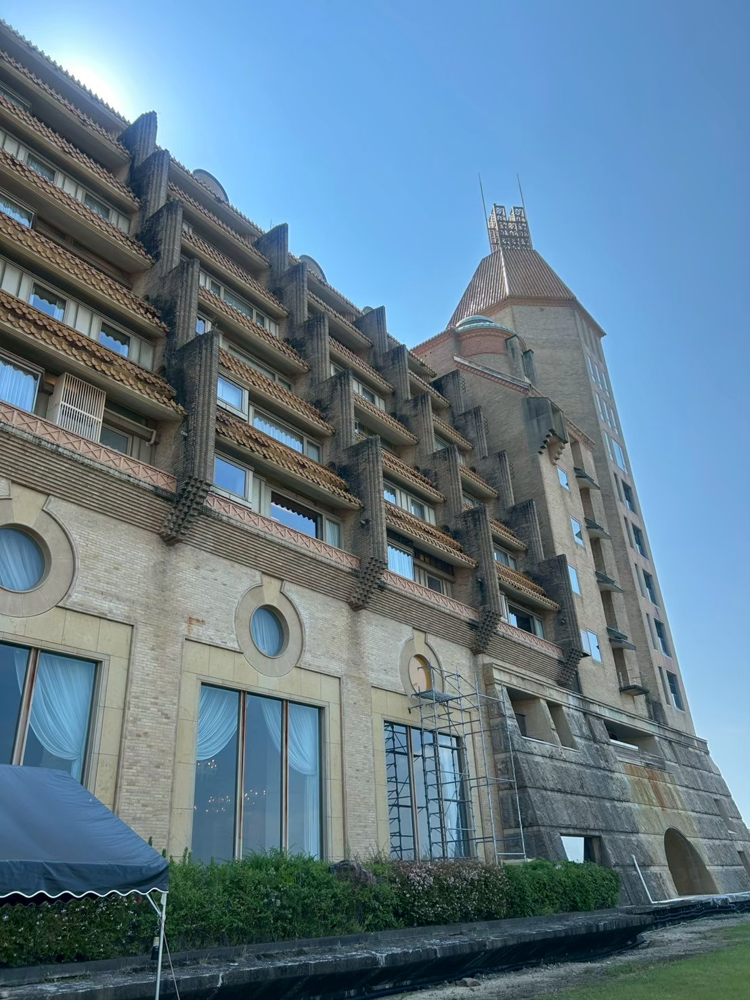
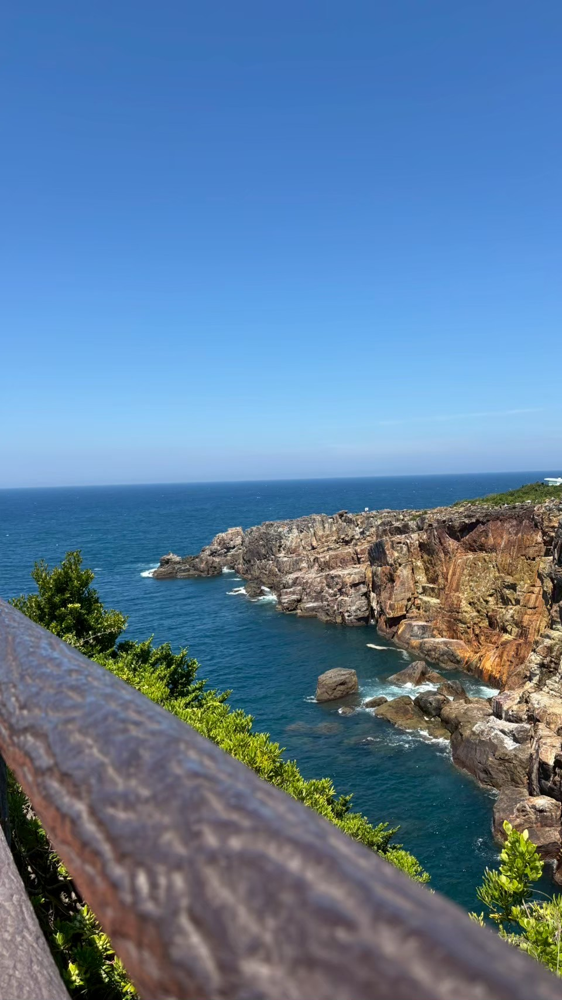
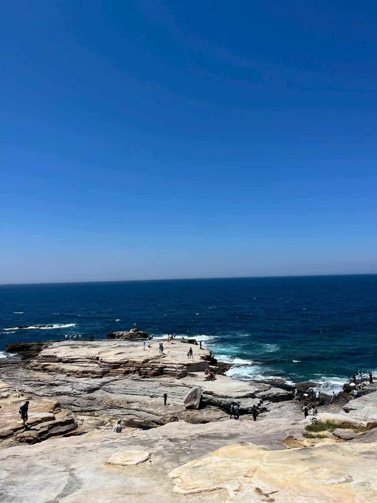

2025年度フィールドワークを実施
和歌山県白浜へ1泊2日（2025年8月2日・3日）
2025年8月2日（土）・3日（日）の1泊2日で、大用ゼミのフィールドワークを実施しました。ゼミ生のほとんどが参加し、和歌山県白浜を訪れました。

▲ 川久ミュージアム
初日は川久ミュージアムを見学しました。

▲ 白良浜の夜景
夜は白良浜を散策しました。白い砂浜と夜景が印象的でした。

▲ 三段壁
2日目は、迫力ある断崖が続く三段壁を見学しました。

▲ 千畳敷
続いて、広大な岩畳が広がる千畳敷を訪れました。
最後に白浜エネルギーランドを訪れ、不思議な錯覚を楽しめるアトラクションで盛り上がりました。
研究活動の合間に、こうした形でゼミ生同士の親睦を深める機会も大切にしています。